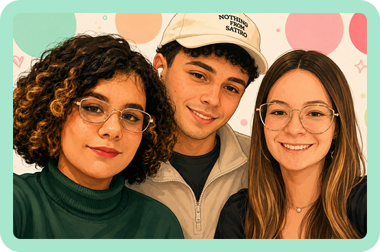

Sobre o PetClean
Plataforma de gerenciamento para pet shops que simplifica o dia a dia
e impulsiona o crescimento do seu negócio.
Desenvolvido com foco em pequenos e médios pet shops,
o PetClean centraliza todas as informações do seu estabelecimento em um único lugar.
Quem Somos
O PetClean nasceu da necessidade real de pequenos e médios pet shops
que ainda dependem de planilhas, controles manuais ou sistemas complicados.
Criado em 2026 por estudantes de Desenvolvimento de Software Multiplataforma
Helen Vitória Silva Aclina, Gabriel Wagner dos Santos Lira e Luara Zequini,
o projeto foi desenvolvido como solução prática para organizar o fluxo de
trabalho, melhorar o atendimento e fornecer visibilidade real sobre o negócio.
Hoje, o PetClean é uma plataforma web completa de gerenciamento, pensada
especialmente para quem vive o dia a dia de um pet shop.

Valores
- Simplicidade e facilidade de uso
- Foco no cliente (pet shop)
- Organização e controle de dados
- Transparência nas informações
- Inovação acessível
Missão
Facilitar a gestão de pet shops por meio de uma plataforma simples, eficiente e acessível, permitindo que donos e atendentes dediquem mais tempo ao que realmente importa: cuidar dos animais e atender bem seus tutores.
Visão
Ser a principal referência em sistemas de gestão para pet shops de pequeno e médio porte no Brasil, tornando-nos a plataforma mais utilizada e confiável do segmento.